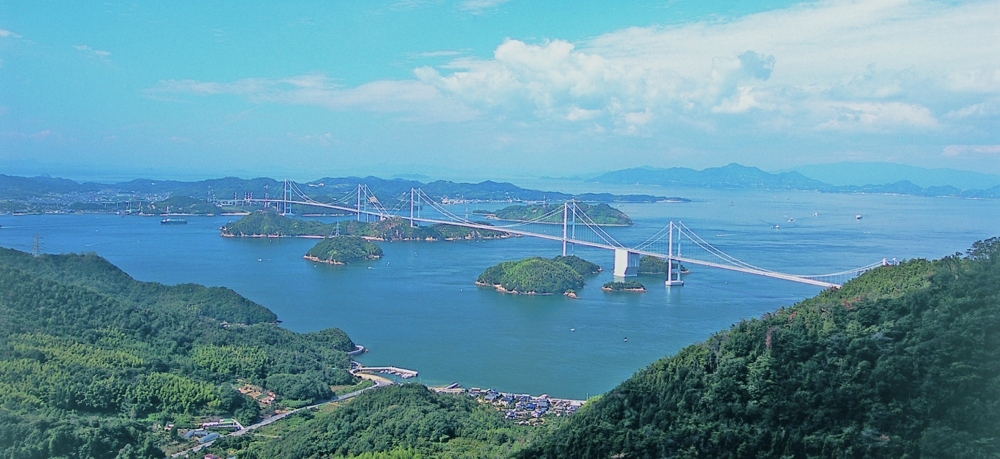

消費者の方に知って欲しいこと
「プレオーガニックコットンは、1%のオーガニックを増やすことにつながる取り組み。」
一般綿、オーガニックコットン、ともに世界第一位の生産量を誇る(1) インドでは、働く人の多くが農業に携わる職業についています。ただ、オーガニックコットンの生産量はほとんど伸びておらず、総生産量の約1％程度にすぎないというのが現状です。一方、サステナブルコットンとして存在感を増しているBCIは、毎年生産量を増やしています。
一見、環境負荷がなさそうにみえる天然素材の「コットン」ですが、実は多くの化学農薬を使用したり、大量の水が必要だったりと、一般綿の栽培を続けるのは地球にとっても私たち人類にとってもサステナブル(持続可能)な選択ではないと考えられます。効率や生産性を重視するために遺伝子組換種子や化学肥料・農薬・殺虫剤など改良してきた現在の農法は、環境に大きな負荷を与え、インドの農家への大きな負担となっています。(2)(3)
ただ、一般綿の栽培が健康のためにも地球のためにも良くないことは理解していても、収穫量が減ることに対する不安等から、オーガニック綿栽培への移行をためらう農家も少なくないのです。
私たちのPOCの取り組みが、そんな農家の皆さんのオーガニック栽培への移行を後押ししていければ、1%のオーガニックを増やすことにつながると思っています。
(1)Textile Exchange,Organic Cotton MarketReport2021,https://textileexchange.org/wp-content/uploads/2021/07/Textile-Exchange_Organic-Cotton-Market-Report_2021.pdf
(2)Ms. Jumde Akanksha,Cash Crop Crisis: Farmer Suicides, Human Rights and the Agrarian Crisis in India,2018,https://www.indianjournals.com/ijor.aspx?target=ijor:rjhss&volume=8&issue=3&article=012
(3)Smita Narula, Faculty Director, CHRGJ/IHRC,EVERY THIRTY MINUTES FARMER SUICIDES, HUMAN RIGHTS, AND THE AGRARIAN CRISIS IN INDIA,https://chrgj.org/wp-content/uploads/2016/09/Farmer-Suicides.pdf
プロジェクトを支える日本の匠のものづくり
遠くインドの綿花畑で生産されるPOCは、海外で糸に紡がれ、やがて世界中の生産者により製品に仕上げられて、私たちの手元に届きます。なかでも日本の産地において伝承されている匠の技術は、大切に育てられたコットンに更なる価値をもたらし、地球や人に優しいだけでなく品質にも優れる綿製品を作ることを可能にしています。
愛媛県
今治タオル工業組合 IMABARI TOWEL INDUSTRIAL ASSOCIATION
昭和27年、国内最大規模のタオル産地である今治の地に、当時、中四国タオル調整組合として設立された今治タオル工業組合。温暖な気候と豊かな水源に恵まれた今治の地で、変わらぬ職人の技術とこだわりを受け継ぎ、厳しい品質管理基準を満たす「安心・安全・高品質」な今治タオルを消費者に届け続けています。
(2021年10月現在 参加企業数100社)
兵庫県
播州織工業協同組合 BANSHUORI TEXTILE INDUSTRY CO-OPERATIVE ASSOCIATION
糸を各種の色に染め上げ、この色糸を使って様々な模様に織り上げる先染織物という手法を用いる播州織は、寛政4年(1792年)に京都西陣織から現在の兵庫県西脇市にその技術を持ち帰ったのがはじまりだと伝えられています。以来、西脇産地の地場産業として200年以上受け継がれ、昭和22年には播州織工業協同組合が設立されました。その高い技術力や意匠性は、国内外で高い評価を受けています。
(2021年10月現在 参加企業数118社)
日本全国の多くの生産パートナーのご協力により、POCプログラムは支えられています。